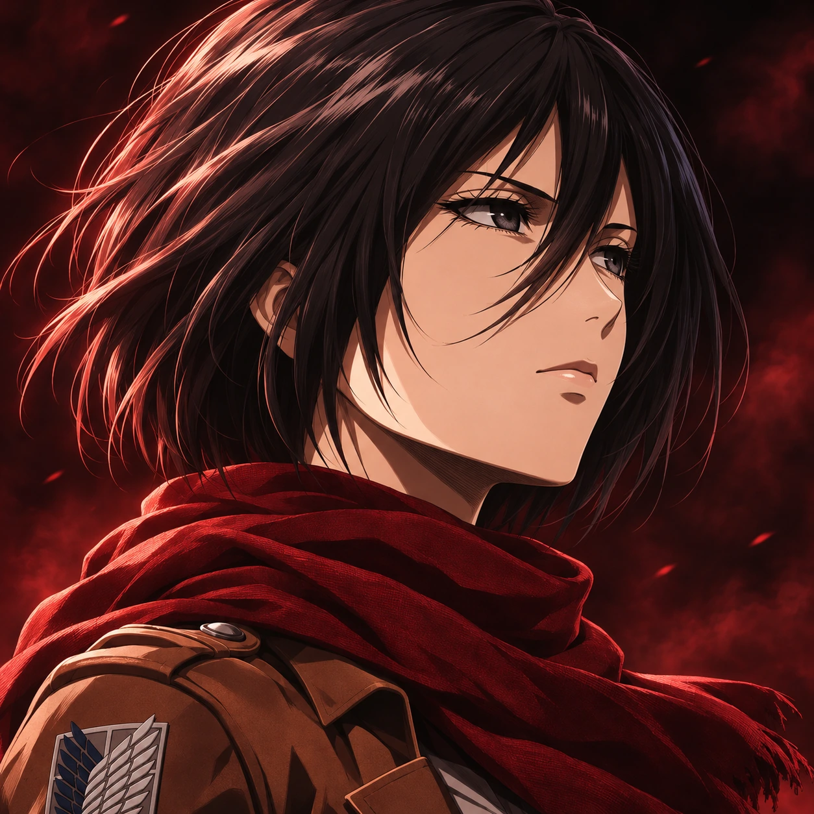

If you would like to know more about me, feel free to explore the Information tab. It highlights my hobbies, my personal address, and my contact Information. My social media account located below that you can free to visit